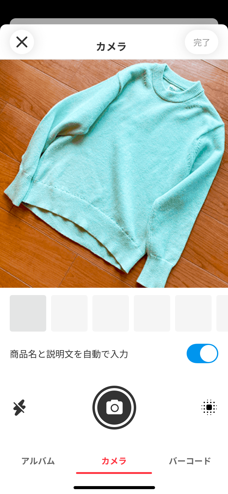
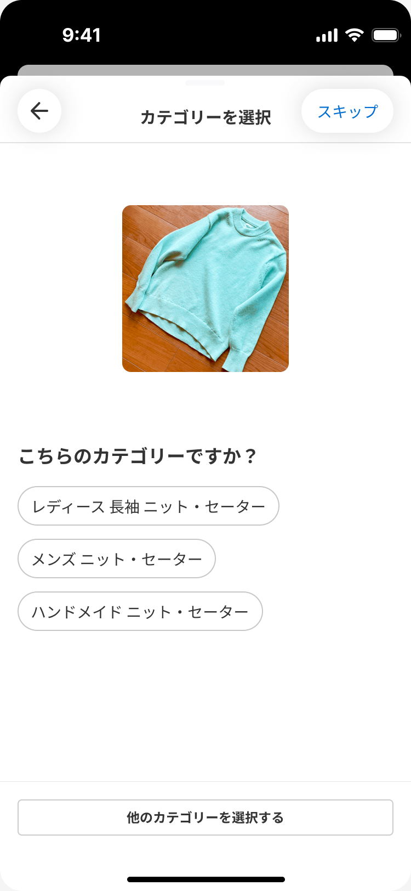
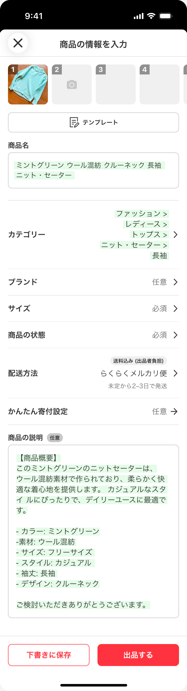

LESSON 01
時短の第一歩は、同じ作業をまとめる
写真を撮るたびに説明文を書く。梱包のたびに袋を探す。そんな切り替えを減らすだけでも、出品は進めやすくなります。今回は、いつもの作業にアプリとAIを取り入れる方法まで紹介します。
LESSON 02
01 共通の文章を、メモに保存する
商品説明の見出しと発送の定型文を、スマホのメモに保存します。商品ごとに変わる部分は【 】にしておくと、入力する場所がひと目で分かります。
【商品名・型番】 【サイズ・素材】 【状態・気になる点】 【付属品】 【梱包・発送予定】
AIを使う場合も、この型があると文章を整えやすくなります。貼り付けた後は、前の商品のブランド・寸法・発送日が残っていないか確認しましょう。
LESSON 03
02 アパレルの採寸は、Smartsizerも便利
衣類の出品が多い方には、スマートサイザー（Smartsizer）もおすすめです。スマホを使って衣類を測定し、寸法を重ねた画像として保存できるアプリです。採寸と記録の手間を減らす選択肢になります。
身幅・着丈など、商品ごとに測る項目を決めてから使うとスムーズです。最初の数点はメジャーでも測り、アプリの結果と比べて感覚をつかみましょう。
公式掲載ではiPhone・iPad向け、日本語対応、アプリ内課金あり。対応OS・使える機能・料金は、利用する端末のApp Storeで確認してください。
LESSON 04
03 撮影場所と撮る順番を固定する
- 場所を決める
白や淡い無地の背景、自然光が入る場所を用意。実物の色に近い明るさで撮ります。
- 必要な写真をそろえる
全体 → 背面・底 → タグ・型番 → 傷 → サイズ → 付属品。この順番を基本に、商品に合わせて追加します。
- 1商品ずつ整理する
管理番号と写真を対応させます。採寸画像も同じ商品にまとめ、別の商品と混ざらないようにします。
LESSON 05
04 AIで「書き始める手間」を減らす
商品説明が思いつかずに手が止まるなら、AIに下書きを任せてみましょう。使い分けの目安は次の2つです。
メルカリ内でサッと作る
写真とカテゴリーから商品名・説明文を作る「AI出品サポート」。出品画面の中で進めたいときに便利です。
自分の型で文章を整える
ChatGPTのプロジェクトに、説明の順番や発送条件を保存。毎回同じお願いを書く手間を減らせます。
LESSON 06
画面で確認① AIをオンにして写真を選ぶ
メルカリの「出品する」から撮影・写真選択へ進みます。下のスイッチ「商品名と説明文を自動で入力」がオンになっていることを確認して、実物の写真を撮影・選択します。

画面引用：メルカリ公式ガイド「AI出品サポート」。表示は変更される場合があります。
写真をそろえたら「完了」へ。傷やタグの写真もあると、後で説明を確認しやすくなります。画面画像はタップすると拡大できます。
LESSON 07
画面で確認② 商品に合うカテゴリーを選ぶ
写真のあとにカテゴリー候補が出たら、商品に合うものを選びます。候補が違う場合は「他のカテゴリーを選択する」から指定します。

画面引用：メルカリ公式ガイド「AI出品サポート」。表示は変更される場合があります。
似ている商品でも、レディース・メンズなどの分類が異なることがあります。適切なカテゴリーを選んで、生成される商品情報を確認しましょう。
LESSON 08
画面で確認③ 説明を実物と照合する
生成後は商品名と説明を読み、タグ・実寸・状態と照合します。下の公式画面例には「ウール混紡」「フリーサイズ」とありますが、自分の商品で確認できた場合だけ使う表現です。

画面引用：メルカリ公式ガイド「AI出品サポート」。表示は変更される場合があります。
確認する：品名・素材・サイズ・付属品。
補足する：実寸・シミや毛玉・使用感・発送予定。
最後に販売価格・配送方法・発送日数も自分で確認し、出品します。忙しい日は下書きに保存して、後から仕上げても大丈夫です。
LESSON 09
ChatGPT① 出品用プロジェクトを作る
ChatGPTのプロジェクトは、関連するチャット・資料・共通の指示をまとめておける場所です。たとえば「メルカリ出品サポート」というプロジェクトを作り、自分の説明ルールを保存します。
図は使い方の整理です。実画面のボタン名や配置は端末・更新で異なります。「プロジェクト」の作成・指示設定から進めてください。
共通で持たせるもの
説明文の見出し、実際の発送日数、割引があればその条件。変更したら更新します。
商品ごとに分けるもの
ブランド、サイズ、素材、実寸、傷、付属品。前の商品の内容を引き継がせません。
LESSON 10
ChatGPT② 共通の指示を保存する
まずは下の文章を、プロジェクトの指示に保存します。これは出品用に作成した指示例です。使いながら自分の書き方に調整できます。
メルカリの商品説明の下書きを手伝ってください。 ・購入者が読みやすい、やさしい敬語で書く。 ・商品ごとに新しいチャットを使い、別商品の情報を混ぜない。 ・写真と今回伝えた事実だけを使う。 ・ブランド、素材、サイズ、型番、状態を推測で断定しない。 ・不明な項目は「確認が必要な項目」として最後に分ける。 ・傷や汚れ、欠品は省略せず、具体的に伝える。 ・発送日数や割引条件は、私が指定した場合だけ書く。 出力は次の順番にしてください。 1. 商品名案（40文字以内） 2. 商品説明（特徴／サイズ・素材／状態／付属品／発送） 3. 出品前に確認が必要な項目
LESSON 11
ChatGPT③ 写真と商品の事実を送る
プロジェクト内で商品ごとの新しいチャットを開き、全体・タグ・傷の写真と、採寸メモを添えます。以下の【 】を実際の情報に置き換えて送ってみましょう。
この商品の出品文を、プロジェクトの指示に沿って作ってください。 添付：全体、タグ、傷・汚れの写真 商品： 【 】／管理番号： 【 】 ブランド・型番： 【 】 タグのサイズ・素材： 【 】 確認済みの実寸： 【身幅・着丈など】 状態・傷・汚れ： 【場所と程度】 付属品： 【 】 発送予定： 【実際に対応できる日数】 分からないことは推測せず、確認事項として教えてください。
仕上がりが長ければ「内容を変えずに短く」「傷の説明を先に」などと追加で頼めます。採寸画像の数字も、読み違いがないか確認してください。
LESSON 12
05 よく使う配送と資材を、ひとまとめに
よく扱う商品に合う配送方法を2〜3候補に絞り、公式の早わかり表を保存。袋・テープ・定規は、発送する場所にまとめて置きましょう。
- 梱包後に測る
内袋・緩衝材・外装を含めて、厚さ・3辺・重さを測ります。衣類の採寸値とは別です。
- 資材代も含めて比べる
専用箱が必要な方法もあります。AIが配送方法を提案しても、実際の梱包サイズ・重量で確かめます。
- 最後の照合は1件ずつ
商品・付属品・送り先を確認。まとめて作業しても取り違えないようにします。
LESSON 13
今日、1商品で試してみよう
便利な方法が見つかったら、次の1商品でも繰り返します。自分に合う手順を少しずつ固めることが、無理なく続く時短につながります。